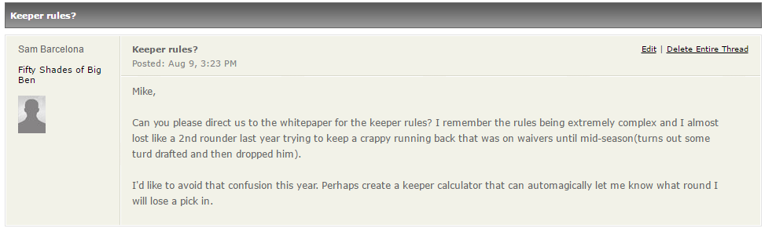

Keeper Calculator
Thanks Sam Barcelona for inspiring this incredible calculator. I'm sure it'll help all 2 of you who never remember how to
calculate what round you lose for keepers

Enter the round or the draft pick of the player you'd like to keep. Draft Pick is
determined by:
-
Where they were drafted last year, regardless of if you got them off of the waiver
wire or not.
-
If the player was your keeper from last year, their draft pick is based on their ADP from last year.
2015 ADP will be based off of these rankings